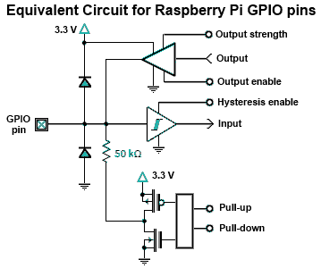

Control de GPIO
Este tutorial guía desde la manipulación de registros hasta el uso de abstracciones modernas (SDKs, HALs) para controlar GPIO en microcontroladores.
1. ¿Qué es el control de registros?
Un registro es una pequeña memoria interna del microcontrolador, normalmente de 8, 16 o 32 bits. Cada bit de un registro controla o refleja el estado de alguna función del hardware: habilitar una salida, indicar una entrada, seleccionar un modo, etc.
Cuando se programa a nivel de registro, se leen y escriben directamente las direcciones de memoria donde residen esos registros, sin funciones de librerías de alto nivel. Periféricos (GPIO, UART, Timers…) exponen campos de bits para dirección, datos, pulls, etc.
Muchos MCUs ofrecen escrituras atómicas “Write-1-to-Set/Clear/XOR” (SET/CLR/XOR) para afectar solo los bits indicados, evitando condiciones de carrera.
Ejemplos de familias:
-
ATmega328P (Arduino Uno):
-
DDRB→ dirección de datos (input/output) PORTB→ valores de salidaPINB→ lectura de entradas-
RP2040 (Pico 2):
-
SIO->gpio_oe→ configuración de pines como salida SIO->gpio_out→ valores de salidaSIO->gpio_in→ lectura de entradas
La idea transversal es la misma: leer y escribir bits en registros.
2. GPIO por dentro

Ideas clave :
- "IOMUX/AF": selecciona la función del pin (GPIO, UART, SPI…).
- "DIR/OE": habilita el driver de salida del pin.
- "OUT/DATA": fija el nivel lógico.
- "IN": lee el estado del pin.
- "PULL-UP/DOWN": resistencias internas para fijar nivel cuando está en entrada.
3. Representacion Numerica
| Expresión | Binario | Hex | Decimal |
|---|---|---|---|
1u << 0 |
0b00000001 |
0x01 |
1 |
1u << 2 |
0b00000100 |
0x04 |
4 |
1u << 5 |
0b00100000 |
0x20 |
32 |
1u << 7 |
0b10000000 |
0x80 |
128 |
Nota
Por qué usar desplazamientos (<<): es una forma compacta de “poner a 1 el bit n” sin escribir literales binarios/hex largos. Puedes usar indistintamente binario, hex o decimal (son equivalentes).
4. Operadores bit a bit (bitwise) en C
Para manipular registros se usan operadores bitwise:
| Operador | Uso | Ejemplo | Explicación | |
|---|---|---|---|---|
| (OR) |
Poner bits en 1 | `reg | = (1u << n);` | Fuerza el bit n a 1 sin afectar otros bits en 0 |
& (AND) |
Conservar ciertos bits | reg &= mask; |
Mantiene 1 solo donde mask tiene 1 |
|
~ (NOT) |
Invertir bits | ~(1u << n) |
Máscara con todos 1 excepto el bit n | |
^ (XOR) |
Alternar (toggle) | reg ^= (1u << n); |
Cambia el bit n de 0↔1 | |
<<, >> (shift) |
Desplazar | (1u << 5) |
Genera un valor con el bit 5 en 1 |
Ejemplos por operador
AND &:
0b11001010 & 0b11110000 = 0b11000000
0x5A & 0x0F = 0x0A (90 & 15 = 10)
OR |:
0b01010000 | 0b00000110 = 0b01010110
0x20 | 0x04 = 0x24
XOR ^:
0b00001111 ^ 0b00000101 = 0b00001010
0xAA ^ 0xFF = 0x55
NOT ~:
~0b00001111 = 0b11110000 (en 8 bits)
~0x00 = 0xFF
Shifts:
1u << 2 = 0b00000100 = 0x04
0b10000000 >> 3 = 0b00010000 = 0x10
5. El bloque SIO (Single-Cycle I/O) en RP2040
SIO es la unidad del RP2040 para acceso rápido a GPIO. Proporciona registros de lectura/escritura directa con operaciones atómicas por bits.
Registros principales de SIO
gpio_oe→ estado de dirección (1 = salida, 0 = entrada)gpio_oe_set→ pone bits a 1 (salida)gpio_oe_clr→ pone bits a 0 (entrada)gpio_oe_togl→ invierte bits (entrada ↔ salida)gpio_out→ estado actual de salidasgpio_set→ pone pines en alto (1) de forma atómica multipingpio_clr→ pone pines en bajo (0) de forma atómica multipingpio_togl→ invierte pines de forma atómica multipingpio_in→ lectura de entradas
Cada bit corresponde a un GPIO (bit 2 controla GPIO2, etc.).
De registros a SDKs y HALs (catálogo de comandos)
Pico SDK (C, equilibrio control/portabilidad)
- Inicialización:
gpio_init(pin),gpio_init_mask(mask) - Dirección:
gpio_set_dir(pin, bool),gpio_set_dir_out_masked(mask),gpio_set_dir_in_masked(mask) - Escritura por pin:
gpio_put(pin, 0/1) - Escritura multipin atómica:
gpio_set_mask(mask),gpio_clr_mask(mask),gpio_xor_mask(mask),gpio_put_masked(mask, value) - Lectura y pulls:
gpio_get(pin),gpio_pull_up(pin),gpio_pull_down(pin),gpio_disable_pulls(pin)
Arduino (muy portable, más alto nivel)
- Dirección:
pinMode(pin, INPUT/OUTPUT/INPUT_PULLUP/INPUT_PULLDOWN) - I/O digital:
digitalWrite(pin, HIGH/LOW), digitalRead(pin)
MicroPython/CircuitPython (prototipado rápido)
from machine import PinPin(n, Pin.OUT/Pin.IN, pull=Pin.PULL_UP/PULL_DOWN)p.on(),p.off(),p.value()
9. Primer Codigo Blink
#include "pico/stdlib.h"
#include "hardware/structs/sio.h"
int main() {
const uint32_t bit = 1u << PICO_DEFAULT_LED_PIN;
gpio_init(PICO_DEFAULT_LED_PIN); // pone función SIO y habilita I/O
sio_hw->gpio_oe_set = bit; // salida (OE=1) atómico
while (true) {
sio_hw->gpio_set = bit; // alto (usa campo del SDK)
sleep_ms(500);
sio_hw->gpio_clr = bit; // bajo
sleep_ms(500);
}
}
// Archivo: sdk_blink.c
#include "pico/stdlib.h"
#include "hardware/gpio.h"
int main() {
// stdio_init_all(); // OPCIONAL: solo para printf
gpio_init(PICO_DEFAULT_LED_PIN); // enruta el pin a GPIO/SIO
gpio_set_dir(PICO_DEFAULT_LED_PIN, true); // salida
while (true) {
gpio_put(PICO_DEFAULT_LED_PIN, 1); // ON
sleep_ms(500);
gpio_put(PICO_DEFAULT_LED_PIN, 0); // OFF
sleep_ms(500);
}
}
#include "pico/stdlib.h"
#include "hardware/structs/sio.h"
int main() {
const uint32_t bit = 1u << PICO_DEFAULT_LED_PIN;
gpio_init(PICO_DEFAULT_LED_PIN); // asegura función SIO
sio_hw->gpio_oe_set = bit; // salida
while (true) {
sio_hw->gpio_togl = bit; // toggle atómico (no gpio_out_xor)
sleep_ms(500);
}
}
#include "pico/stdlib.h"
#include "hardware/gpio.h"
int main() {
gpio_init(PICO_DEFAULT_LED_PIN);
gpio_set_dir(PICO_DEFAULT_LED_PIN, true);
const uint32_t bit = (1u << PICO_DEFAULT_LED_PIN);
while (true) {
gpio_xor_mask(bit); // alternar SOLO ese pin
sleep_ms(500);
}
}
Máscaras
Una máscara es un patrón de bits utilizado para seleccionar, modificar o verificar bits específicos dentro de un registro o un conjunto de datos. Las máscaras se utilizan comúnmente en operaciones de manipulación de bits, como la configuración de pines GPIO, donde se puede utilizar una máscara para afectar solo a un subconjunto de pines en lugar de a todos ellos.
... 0000 0000 0000 0000 0000 0101 0100
^ ^ ^
| | └─ selecciona GPIO 2
| └─── selecciona GPIO 4
└───── selecciona GPIO 6
MASK = (1u<<2) | (1u<<4) | (1u<<6), entonces una sola escritura a los registros SET/CLR/XOR del SIO puede encender, apagar o alternar todos esos pines a la vez.
Construccion de Mascaras
- Un solo pin:
1u << PIN - Varios pines:
((1u << PIN1) | (1u << PIN2) | (1u << PIN3)) - Rango contiguo("bus"):
MASK_N_BITS = ((1u << N) - 1u) << SHIFT- para 3 bits en GPIO de 10..12 ->MASK = ((1u << 3) - 1u) << 10
Ejemplos de mascara aplicada
#include "pico/stdlib.h"
#include "hardware/structs/sio.h"
#define PIN_A 2
#define PIN_B 4
#define PIN_C 6
int main() {
// 1) Máscara con varios pines
const uint32_t MASK = (1u<<PIN_A) | (1u<<PIN_B) | (1u<<PIN_C);
// 2) Asegura función SIO en cada pin (necesario una sola vez)
gpio_init(PIN_A);
gpio_init(PIN_B);
gpio_init(PIN_C);
// 3) Dirección: salida (OE=1) para TODOS los pines con UNA sola instrucción
sio_hw->gpio_oe_set = MASK;
while (true) {
// 4) SET: pone en alto TODOS los pines de la máscara en una sola operación
sio_hw->gpio_set = MASK;
sleep_ms(500);
// 5) CLR: pone en bajo TODOS los pines de la máscara en una sola operación
sio_hw->gpio_clr = MASK;
sleep_ms(500);
// 6) TOGL (XOR): alterna TODOS los pines de la máscara en una sola operación
sio_hw->gpio_togl = MASK;
sleep_ms(500);
}
}
En el SDK los comandos tipicos son:
gpio_set_mask(MASK);→ pone en alto los pines de MASKgpio_clr_mask(MASK);→ pone en bajo los pines de MASKgpio_xor_mask(MASK);→ alterna los pines de MASKgpio_put_masked(MASK, VALUE);→ pone en alto/bajo los pines de MASK según el valor de VALUE
Ejemplo
#include "pico/stdlib.h"
#include "hardware/structs/sio.h"
#define PIN_A 2
#define PIN_B 4
#define PIN_C 6
int main() {
// 1) Máscara con varios pines
const uint32_t MASK = (1u<<2) | (1u<<4) | (1u<<6);
// 2) Asegura función SIO en cada pin (necesario una sola vez)
gpio_init(2);
gpio_init(4);
gpio_init(6);
// 3) Dirección: salida (OE=1) para TODOS los pines con UNA sola instrucción
sio_hw->gpio_oe_set = MASK;
while (true) {
gpio_set_mask(MASK); // alto en 2,4,6
sleep_ms(200);
gpio_clr_mask(MASK); // bajo en 2,4,6
sleep_ms(200);
gpio_xor_mask(MASK); // toggle en 2,4,6
}
}
#include "pico/stdlib.h"
#include "hardware/gpio.h"
#define A 0
#define B 1
#define C 2
int main() {
const uint32_t MASK = (1u<<A) | (1u<<B) | (1u<<C);
const uint32_t PATRON = (1u<<C) | (1u<<A);
gpio_init_mask(MASK);
gpio_put_masked(MASK, PATRON);
gpio_set_dir_masked(MASK, MASK);
while (true) {
sleep_ms(500);
gpio_xor_mask(MASK);
}
}
#include "pico/stdlib.h"
#include "hardware/gpio.h"
#define A 0
#define B 1
#define C 2
int main() {
const uint32_t MASK = (1u<<0) | (1u<<1) | (1u<<2);
gpio_init(0); gpio_init(1); gpio_init(2);
sio_hw->gpio_oe_set = MASK; // outputs
sio_hw->gpio_clr = MASK; // clear first
sio_hw->gpio_set = (1u<<2) | (1u<<0); // load 101
while (true) {
sleep_ms(500);
sio_hw->gpio_togl = MASK;
}
}
Referencias
Pinout Pico 2

Reset Cableado

ATOMICO un ciclo
Necesario para usarlo
`#include "hardware/structs/sio.h"`
Antes conecta cada pin a SIO con `gpio_init(pin);`
| Propósito | Registro / Campo | Qué hace |
|---|---|---|
| Leer entradas (todos) | sio_hw->gpio_in |
Lee niveles de todos los GPIO; enmascara para quedarte con los de interés. |
| Salida: SET | sio_hw->gpio_set = mask; |
Pone en alto los pines de mask (atómico). |
| Salida: CLR | sio_hw->gpio_clr = mask; |
Pone en bajo los pines de mask (atómico). |
| Salida: TOGGLE | sio_hw->gpio_togl = mask; |
Alterna los pines de mask (XOR atómico). |
| Salida: escritura directa | sio_hw->gpio_out = value; |
Sobrescribe todo el registro de salida (no atómico). |
| Dirección: OUT | sio_hw->gpio_oe_set = mask; |
Pasa a salida los pines de mask (atómico). |
| Dirección: IN | sio_hw->gpio_oe_clr = mask; |
Pasa a entrada los pines de mask (atómico). |
| Dirección: alternar | sio_hw->gpio_oe_togl = mask; |
Alterna IN/OUT (atómico). |
SDK - alto nivel
Necesario para usarlo
`#include "hardware/gpio.h"`
Antes conecta cada pin a SIO con `gpio_init(pin);`
| Propósito | Llamada | Qué hace |
|---|---|---|
| Enrutar a SIO | gpio_init(pin); |
Selecciona GPIO_FUNC_SIO y habilita buffer de entrada. |
| Init varios pines | gpio_init_mask(mask); |
Igual, pero para múltiples pines. |
| Habilitar entrada | gpio_set_input_enabled(pin, en); |
Controla el buffer de entrada. |
| Fijar dirección (uno) | gpio_set_dir(pin, out); |
true=salida, false=entrada. |
| Dir. enmascarada | gpio_set_dir_masked(mask, value); |
En mask: 1→salida, 0→entrada. |
| Todos salida | gpio_set_dir_out_masked(mask); |
Pasa a salida los pines de mask. |
| Todos entrada | gpio_set_dir_in_masked(mask); |
Pasa a entrada los pines de mask. |
| Escribir un pin | gpio_put(pin, value); |
Alto/Bajo en un pin. |
| Escribir patrón enmascarado | gpio_put_masked(mask, value); |
Actualiza sólo los bits de mask. |
| SET en máscara | gpio_set_mask(mask); |
Pone en alto todos los bits de mask. |
| CLR en máscara | gpio_clr_mask(mask); |
Pone en bajo todos los bits de mask. |
| TOGGLE en máscara | gpio_xor_mask(mask); |
Alterna todos los bits de mask. |